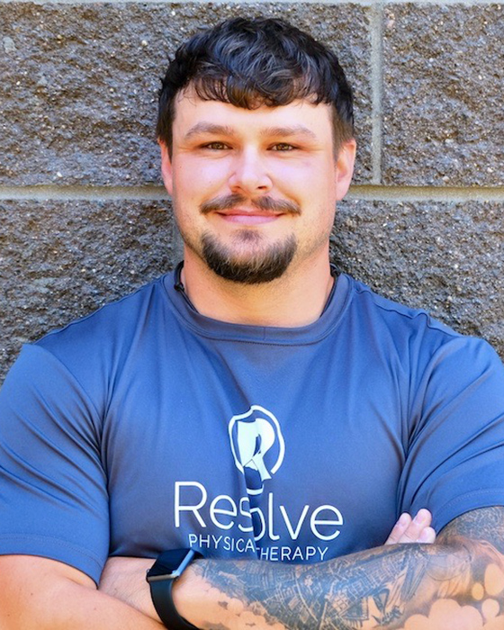

← Explore all Running & Sports Performance services
Sports Injuries in the Bend, Oregon Active Lifestyle
Bend, Oregon is a destination for outdoor athletes. The region offers world-class skiing at Mt. Bachelor, hundreds of miles of mountain biking trails, rock climbing at Smith Rock State Park, whitewater kayaking on the Deschutes River, and competitive leagues in soccer, basketball, lacrosse, and volleyball. This culture of active living means that sports injuries are a reality for athletes of every age and ability level.
At Resolve Physical Therapy, we understand the athlete's mindset. You want to know exactly what is wrong, how long recovery will take, and what you can do to accelerate your return to sport. Our Doctors of Physical Therapy provide honest, evidence-based answers and work with you one-on-one through every phase of rehabilitation. We do not use aides or technicians. Every minute of your session is spent with a licensed DPT who specializes in sports medicine and orthopedic rehabilitation.
Kasey Lohman, DPT, brings specialized experience working with youth and collegiate athletes. As a Central Oregon native, Kasey understands the local sports culture and the specific demands that Bend's terrain and climate place on athletes. She works closely with high school and college coaches, athletic trainers, and physicians to ensure coordinated, comprehensive care for young athletes recovering from injury.
Sports Injuries We Treat
Patellofemoral Syndrome
Patellofemoral pain syndrome is one of the most common knee conditions in athletes, characterized by pain around or behind the kneecap that worsens with squatting, jumping, running, and stair climbing. The condition is prevalent in sports that involve repetitive knee flexion and extension, including basketball, volleyball, skiing, and cycling. Contributing factors include quadriceps weakness, hip muscle imbalances, abnormal patellar tracking, and training errors. Our treatment approach focuses on targeted strengthening of the quadriceps and hip stabilizers, patellar taping and mobilization, activity modification, and progressive return to sport-specific movements.
Concussion
Concussions require careful management that extends beyond cognitive rest. Many athletes experience persistent vestibular and balance symptoms following concussion, including dizziness, visual disturbance, and difficulty with coordination. At Resolve PT, we provide vestibular rehabilitation for post-concussion patients to address these symptoms through progressive balance training, gaze stabilization exercises, and graded return-to-activity protocols. For comprehensive concussion and vestibular care, visit our Vestibular and Balance Therapy pillar page.
ACL Tears
Anterior cruciate ligament tears are among the most significant knee injuries in athletics, commonly occurring in sports that involve cutting, pivoting, and sudden deceleration. While many ACL tears require surgical reconstruction, pre-surgical physical therapy (prehabilitation) and post-surgical rehabilitation are both critical for optimal outcomes. We provide comprehensive ACL rehabilitation from injury through full return to sport. For detailed information about post-surgical ACL recovery, visit our ACL and Shoulder Recovery page.
Hip Flexor Strain
Hip flexor strains involve partial tearing of the iliopsoas or rectus femoris muscles at the front of the hip. These injuries are common in sports requiring sprinting, kicking, and rapid hip flexion such as soccer, running, and martial arts. Symptoms include pain in the front of the hip or groin that worsens with lifting the leg, sprinting, or kicking. Treatment includes progressive stretching and strengthening, manual therapy to the hip joint and surrounding muscles, sport-specific movement retraining, and graduated return to activity with objective strength testing.
Shin Splints
Medial tibial stress syndrome, commonly known as shin splints, causes pain along the inner edge of the shinbone and is prevalent in athletes who run on hard surfaces or rapidly increase training volume. The condition results from repetitive stress on the tibial bone and its surrounding periosteum. Treatment focuses on load management, progressive calf and foot strengthening, running surface modification, and biomechanical correction. Left untreated, shin splints can progress to tibial stress fractures, making early intervention important for athletes who compete in running-based sports.
Sciatica
Sciatica refers to pain that radiates along the sciatic nerve from the lower back through the buttock and down the leg. In athletes, sciatica can result from lumbar disc herniation, piriformis syndrome, or nerve irritation from repetitive spinal loading during sports. Treatment at Resolve PT includes manual therapy to the lumbar spine and hip, nerve mobilization techniques, core stabilization exercises, and sport-specific movement retraining to reduce mechanical stress on the sciatic nerve. Most athletes with sciatica respond well to conservative physical therapy without the need for surgical intervention.
Shoulder Injuries
Shoulder injuries in athletes range from acute traumatic conditions like dislocations and separations to chronic overuse problems including rotator cuff tendinopathy, labral tears, and impingement syndrome. Sports that involve overhead movements, such as swimming, volleyball, baseball, and rock climbing, place significant demands on the shoulder complex. Our treatment approach includes manual therapy for joint and soft tissue mobility, progressive rotator cuff and scapular stabilizer strengthening, overhead movement retraining, and sport-specific return-to-throwing or climbing protocols.
Tennis Elbow and Golf Elbow
Lateral epicondylalgia (tennis elbow) and medial epicondylalgia (golf elbow) are tendinopathies affecting the forearm muscles at their attachment to the elbow. Despite their names, these conditions are common across many sports and activities that require repetitive gripping, wrist extension, or wrist flexion. Mountain biking, rock climbing, kayaking, and racquet sports are common causes in the Bend athlete population. Evidence-based treatment includes progressive tendon loading exercises, grip strength training, manual therapy, activity modification, and ergonomic assessment of sport equipment.
Groin Pull (Adductor Strain)
Groin strains involve the adductor muscles on the inner thigh and are common in sports requiring rapid direction changes, skating, and kicking. Soccer, hockey, skiing, and basketball athletes are particularly susceptible. Recovery requires careful progressive loading of the adductor group, hip strengthening, sport-specific agility retraining, and objective strength testing before clearance for return to sport. The Copenhagen adductor exercise protocol has strong evidence for both rehabilitation and prevention of groin injuries in athletes.
Hamstring Strain
Hamstring strains are among the most common muscle injuries in athletics, with a high recurrence rate when rehabilitation is incomplete. These injuries typically occur during sprinting, jumping, or rapid deceleration and range from minor fiber disruption to complete muscle tears. Risk factors include previous hamstring injury, muscle weakness, fatigue, and inadequate warm-up. Our rehabilitation protocol emphasizes progressive eccentric strengthening, sport-specific movement training, and criteria-based return-to-sport testing to minimize the risk of re-injury. We use strength dynamometry to verify that the injured limb has recovered to within 10 percent of the uninjured side before clearing return to full sport participation.
Return-to-Sport Protocol
At Resolve Physical Therapy, we follow a staged return-to-sport framework that uses objective functional testing to guide progression through each phase. Returning to sport too early is the primary risk factor for re-injury, which is why we never rely on time alone to determine readiness. Instead, we use measurable criteria at each stage.
Stage 1: Pain and Inflammation Management
The initial phase focuses on reducing pain, controlling swelling, and restoring baseline range of motion. Treatment includes manual therapy, modalities, and early protected movement within pain-free limits. Your therapist will educate you on activity modification and provide a home exercise program to maintain fitness in unaffected body regions.
Stage 2: Strength and Mobility Restoration
Once pain and inflammation are controlled, the focus shifts to rebuilding strength, endurance, and full range of motion. Progressive resistance exercises target the injured tissues and surrounding muscle groups. Your therapist will use objective strength measurements to track progress and compare the injured side to the uninjured side.
Stage 3: Sport-Specific Training
This phase introduces sport-specific movements including agility drills, plyometrics, change-of-direction exercises, and sport-relevant skills. Training intensity and complexity increase gradually based on your response and objective performance testing. Your therapist may coordinate with your coach or athletic trainer during this phase to ensure alignment between rehabilitation and team training requirements.
Stage 4: Return-to-Play Clearance
Before clearance for unrestricted sport participation, you must pass a battery of functional tests that demonstrate readiness. These may include single-leg hop tests, Y-balance testing, sport-specific agility testing, AxIT force plate analysis for limb symmetry and power assessment, and strength symmetry measurements. Clearance criteria are based on published evidence for your specific injury type and sport demands.
Youth Athlete Rehabilitation
Young athletes face unique challenges that require specialized care. Growing bodies have open growth plates, developing neuromuscular control, and different injury patterns compared to adult athletes. Overuse injuries, growth plate injuries, and sport-specific movement pattern issues require a therapist who understands adolescent development and the pressures of competitive youth athletics.
Kasey Lohman, DPT, has dedicated her practice to working with youth and collegiate athletes in Central Oregon. She understands the importance of sport to a young person's identity, social connection, and physical development, and she approaches each case with both clinical rigor and genuine care for the whole athlete.
Our youth athlete services include injury evaluation and treatment, sport-specific rehabilitation and return-to-play programs, movement screening and injury prevention assessments, communication with coaches, parents, and athletic trainers, and education on training load management for growing athletes. We work with athletes from local high schools including Summit, Bend, and Mountain View, as well as club and recreational sports programs throughout Central Oregon.
Related Services
Our sports rehabilitation program covers a wide range of conditions. If you are a runner dealing with an overuse injury such as plantar fasciitis, IT band syndrome, or shin splints, our running injuries page provides detailed information about these conditions and our specialized DorsaVi gait analysis approach.
Frequently Asked Questions
When can my athlete return to their sport after an injury?
Return-to-sport timelines depend on the injury type, severity, and the physical demands of the sport. At Resolve PT, we use objective functional testing including strength measurements, hop tests, and sport-specific movement assessments to determine readiness. Our goal is never to rush return but to ensure your athlete meets evidence-based criteria that minimize re-injury risk. Kasey Lohman, DPT, specializes in return-to-sport protocols for youth and collegiate athletes.
Do you treat high school and college athletes?
Yes. Kasey Lohman, DPT, is a Central Oregon native who specializes in working with youth and collegiate athletes. She understands the unique physical demands and competitive pressures that young athletes face and designs rehabilitation programs that address both the injury and the athlete's sport-specific goals. We work with athletes from Summit, Bend, and Mountain View high schools, as well as collegiate athletes from across Central Oregon.
Should I see a physical therapist or a doctor first for a sports injury?
In Oregon, you can see a physical therapist without a physician referral through direct access. For most sports injuries including sprains, strains, and overuse conditions, a physical therapist can evaluate your injury and begin treatment immediately. If imaging or further medical workup is needed, your therapist at Resolve PT will coordinate referrals to appropriate physicians. For suspected fractures, dislocations, or concussions with red flag symptoms, we recommend seeing a physician first.
Get Back in the Game
Every day you wait is a day of lost training. Schedule an evaluation at Resolve Physical Therapy in Bend, Oregon, and start your personalized return-to-sport program with a Doctor of Physical Therapy who specializes in athletic rehabilitation.